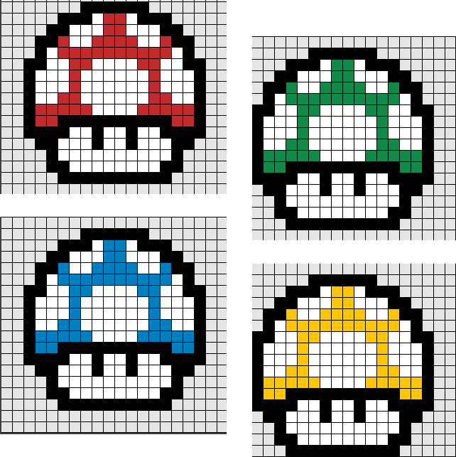

Mario Bros. (マリオブラザーズ Mario Burazāzu?, lit. Hermanos Mario) es un videojuego de arcade desarrollado y publicado por Nintendo en 1983. Fue creado por Shigeru Miyamoto y Gunpei Yokoi, el ingeniero jefe de Nintendo.
